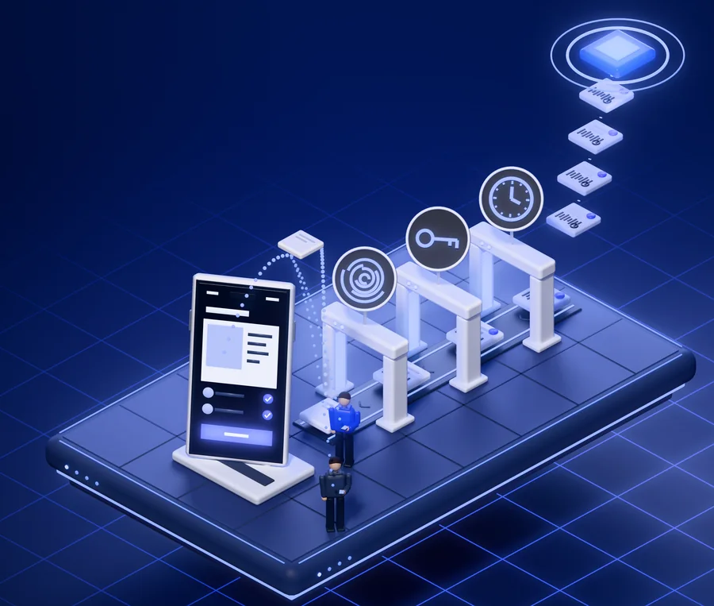
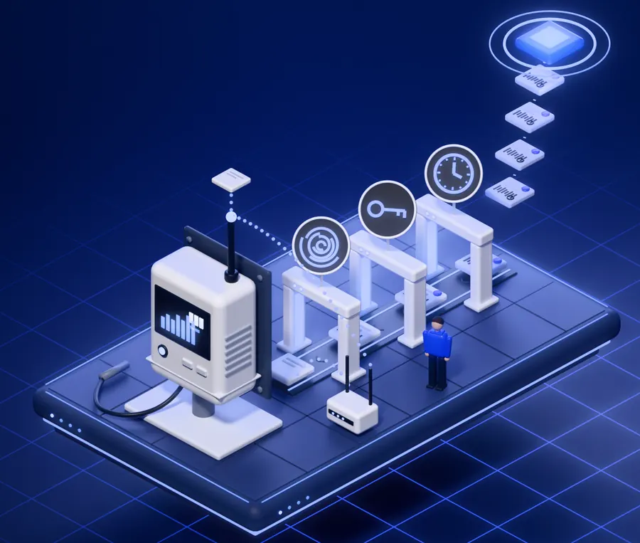
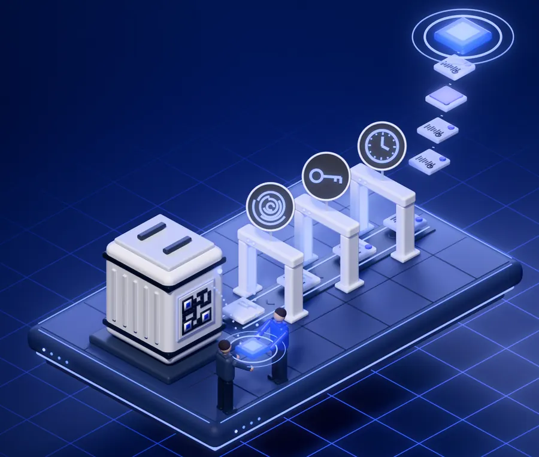
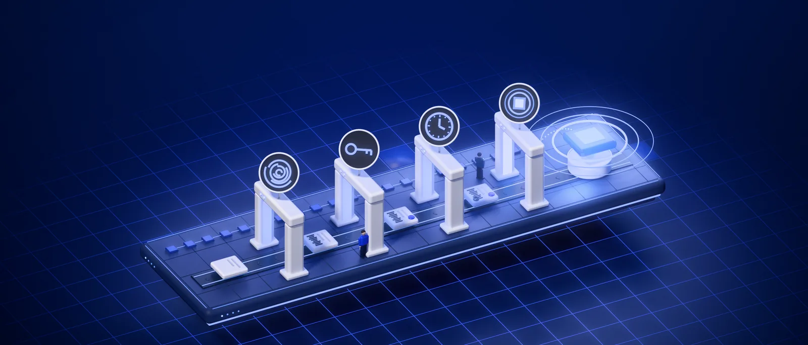
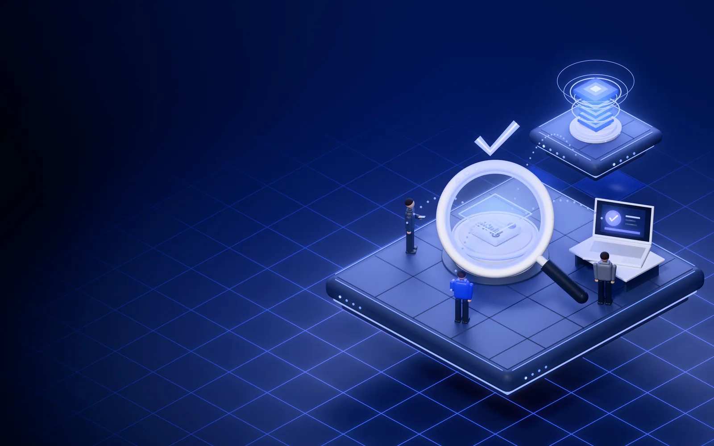
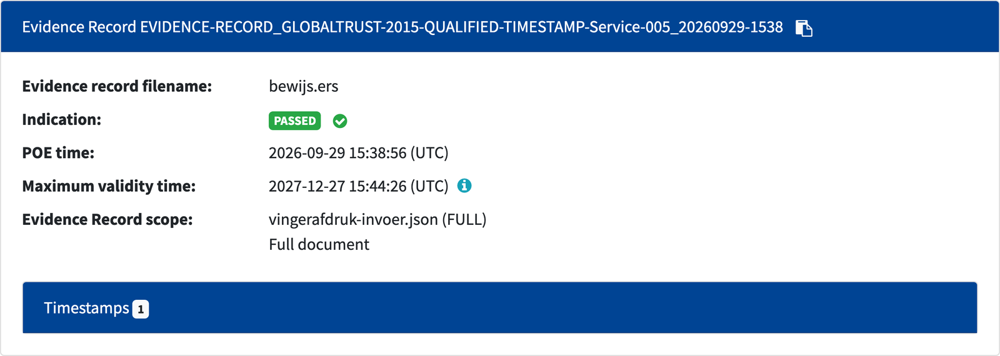
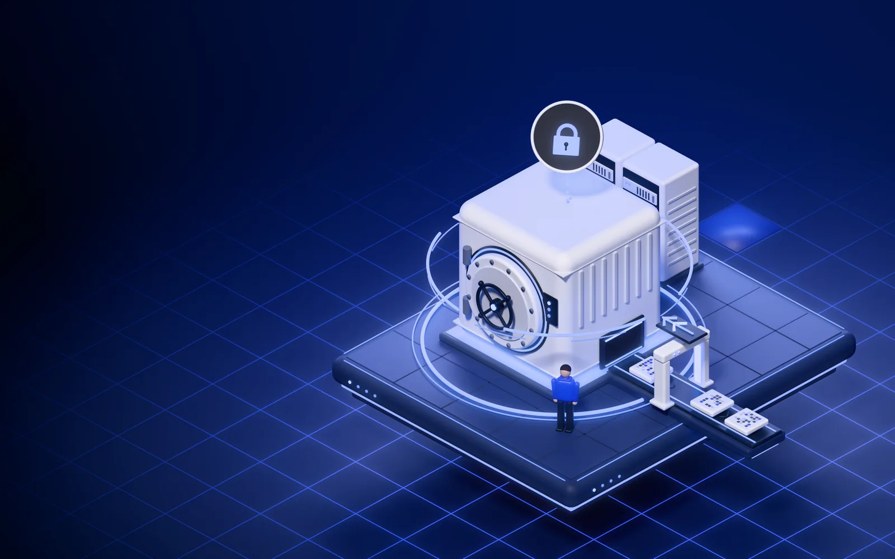

Eén bewijslaag·vier productlijnen·servers in de EU
De verankeringslaag voor uw data.
Wat uw mensen, toestellen en systemen vastleggen, verankert Vidimus binnen vijf minuten buiten uw systeem, zodat elke partij zelf kan nagaan dat het ongewijzigd bleef.
- SHA-256
- Ed25519
- RFC 3161
- eIDAS per groep
- Bitcoin
- EU
De eerste 100 registraties per maand gratis, zonder betaalgegevens. Of vervals eerst zelf een vrachtbrief

Vier productlijnen, één bewijs.
Of een mens, een toestel of een systeem de registratie aanlevert: ze krijgt dezelfde vingerafdruk, handtekening, tijdstempel en hetzelfde anker.
-

LiveVidimus App
Leveringen, schade, overdrachten en inspecties ter plekke, getekend door beide partijen.
- foto · plaats · handtekening
- iPhone · Android · webapp
- verankerd binnen vijf minuten
Vanaf € 0 · 100 registraties per maand gratis
-

LiveVidimus Sensor
Loggers, meters en weegbruggen sturen hun metingen; elke meting wordt apart verankerd.
- HTTPS · REST-API · JSON
- één sleutel per meetbron
- metingen onbeperkt
€ 15 per toestel per maand · de eerste gratis
-
Live
Vidimus Data
Cybersecurity voor uw data: momentopnames van databanken en mappen, en webpagina's zoals ze online stonden.
- vingerafdrukken bij u berekend
- databank · map · webpagina
- elke nacht automatisch: in opbouw
Vanaf € 0 · één momentopname is één registratie
-

In opbouwVidimus Productpaspoort
De lijn van een object: een code met QR‑label, gebeurtenissen en overdrachten, getekend door houder en ontvanger. Geen officieel EU-productpaspoort.
- code en QR-label op het object
- houder en ontvanger tekenen
- in opbouw: het zit nog niet in de app
In opbouw · eerste pilots vanaf december
Bij elke registratie inbegrepen, in elke lijn
- Publieke controlepaginavoor uw tegenpartij, zonder account
- Bewijsbundeleen zip met inhoud, handtekeningen en tijdstempels
- Na te rekenen zonder Vidimusmet verify_bundle.py, openssl of EU DSS
- Servers in de EUHetzner, Neurenberg, versleuteld per organisatie

Zo werkt het bewijs. Vier poorten, bij elke registratie.
U hoeft ons niet op ons woord te geloven: elke stap is met gewone software na te rekenen, ook zonder Vidimus.
-
01 · vingerafdruk
SHA-256
Een vingerafdruk van de inhoud en van elke bijlage. Geen versleuteling: één teken anders geeft een andere vingerafdruk.
64 tekens · per registratie · meteen -
02 · handtekening
Ed25519
Getekend met de sleutel van het toestel of van uw systeem. Tekent de ontvanger mee, dan met een eigen sleutel op een eigen telefoon.
sleutel per toestel · per systeem -
03 · tijdstempel
RFC 3161 + eIDAS
Elke vijf minuten één Merkle-wortel, gestempeld door Sectigo. Voor klantorganisaties per groep ook gekwalificeerd door GLOBALTRUST, doorgaans binnen zes uur.
binnen 5 min · eIDAS per groep -
04 · anker
Bitcoin
Elke wortel gaat via OpenTimestamps naar Bitcoin en staat binnen enkele uren in een blok: een publieke tweede getuige buiten Vidimus.
opentimestamps · .ots in de bundel
Na te rekenen metopenssl tsEU DSSots verifyverify_bundle.pyEén registratie van begin tot bewijs
Kijk zelf. Zonder account.
Elke registratie heeft een publieke controlepagina. Deze is echt: een demoregistratie van Vidimus zelf, een levering van 18 paletten diepvries.
ongewijzigd
8 van 8 controles stemmen overeen
- Inhoudsha-256 · vingerafdrukstemt overeen
- In de verankerde groepMerkle-pad naar de wortelstemt overeen
- Handtekening bronEd25519 · systeemsleutelstemt overeen
- Handtekening VidimusEd25519 · op de bundelstemt overeen
- Grootboekhash-keten · record 105stemt overeen
- TijdstempelSectigo · RFC 3161 · 17:38:38 (UTC+2)stemt overeen
- Gekwalificeerde tijdstempelGLOBALTRUST · eIDAS · 17:38:56 (UTC+2)stemt overeen
- BitcoinOpenTimestamps · in een blokstemt overeen
Drie manieren om na te kijken
- In de browserDe controlepagina rekent het na. Geen account, geen app.
app.vidimus.be/v/{registratie} - Met de bewijsbundelEen zip met inhoud, handtekeningen, Merkle-pad en tijdstempels, plus een klein script.
python3 verify_bundle.py bundel.zip - Met EU DSSDe software van de Europese Commissie leest het Evidence Record.
bewijs.ers · PASSED
Vervals het.
Pas het aantal paletten op deze fictieve vrachtbrief aan en kijk wat er met het bewijs gebeurt. Alles wordt live in uw browser berekend.
Aflevering — CMR
Kaai 913, Antwerpen · getekend door chauffeur en ontvanger, elk op eigen toestel
- Afzender
- Verhelst Transport BV
- Ontvanger
- Nova Logistics NV
- Colli
- 26 paletten · zonder voorbehoud
- Afgeleverd
- 4 september 2026, 15:12 (UTC+2)
- Plaats · toestel
- 51.2302 N · 4.4160 E · ±6 m
of verander zelf een waarde, zoals iemand weken later een kopie, export of pdf zou aanpassen
Voorbeeld · fictieve registratie
ongewijzigd
Dit is exact wat op 4 september om 15:13 (UTC+2) werd vastgelegd, getekend door chauffeur én ontvanger.
- Vastgelegd
- 4 september 2026 · 15:13:22 (UTC+2)
- Tijdstempel
- van een externe dienst, binnen vijf minuten · voor klantorganisaties per groep ook gekwalificeerd (GLOBALTRUST), doorgaans binnen 6 uur
- Anker
berekenen…- Huidige inhoud
berekenen…
DE CONTROLES6 van 6 controles stemmen overeen+
anker … · nu …stemt overeenDe sha-256 over de vijf velden is exact de vingerafdruk in het anker. Dezelfde bytes geven dezelfde 64 tekens; een andere inhoud met dezelfde vingerafdruk vinden is met SHA-256 praktisch onmogelijk.
De vijf velden geven nu een andere vingerafdruk dan het anker. Eén teken verschil, 26 → 23, en de hele hash verandert. Welk veld? Zie hierboven in blauw: {velden}.
sleutel 7f3a·91c2·e04b · handtekening 4b8e…0d17stemt overeenDe Ed25519-handtekening stemt overeen met de vingerafdruk én met de sleutel die op het toestel van de chauffeur staat. Die sleutel wordt op het toestel gemaakt en verlaat het niet.
De handtekening hoort bij de oorspronkelijke vingerafdruk, niet bij deze inhoud. Wie de tekst wijzigt, heeft geen handtekening van de chauffeur over de nieuwe tekst.
sleutel c2d9·5a10·3be7 · handtekening 9a04…77bestemt overeenOok de ontvanger tekende dezelfde vingerafdruk, met een eigen sleutel op een eigen toestel. Twee partijen, één inhoud.
De ontvanger tekende de oorspronkelijke inhoud. Deze gewijzigde versie is door niemand getekend.
tijdstempel nr. 5D2C 9A41 7E03 · 2026-09-04T13:13:22Zstemt overeenEen externe tijdstempeldienst tekende de wortel van de groep op 4 september 2026, 15:13:22 (UTC+2). Omdat de groep registraties van een klantorganisatie bevat, kwam er later ook een gekwalificeerde tijdstempel van GLOBALTRUST op (eIDAS), met een eigen, later tijdstip, doorgaans binnen zes uur; deze registratie is ermee verbonden via haar Merkle-pad. Niemand kan dat moment vervroegen, ook Vidimus niet.
Het tijdstempel geldt voor de wortel waarin de oorspronkelijke vingerafdruk zit. Voor deze inhoud bestaat geen tijdstempel.
groep 2026-09-04T13:10Z · 128 registraties · wortel 9e41…a7c3 · pad 7 stappenstemt overeenVia het Merkle-pad is herrekend dat deze vingerafdruk in de verankerde wortel zit. Dat lukt alleen met exact deze vingerafdruk.
Met een andere vingerafdruk komt het Merkle-pad niet meer uit op de wortel. De inhoud zit dus niet in de verankerde groep.
record 48 213 · vorig record 2c7f…e01astemt overeenDe wortel staat in het grootboek en elk record hasht het vorige. Eén record aanpassen valt op in elk record erna.
Het grootboek kent alleen de oorspronkelijke wortel. Deze inhoud komt nergens in de keten voor.
Ongewijzigd of Gewijzigd: meer zegt Vidimus niet, niet wat er veranderde en niet door wie. Vidimus oordeelt niet, het vergelijkt. Wie gelijk heeft, beoordeelt de rechter.


Europese controle. Met de software van de Commissie.
Voor klantorganisaties krijgt elke groep registraties een gekwalificeerde tijdstempel van GLOBALTRUST (eIDAS); uw registratie is ermee verbonden via haar Merkle-pad. In DSS geeft het Evidence Record van onze demoregistratie PASSED.
- Tijdstempel
- GLOBALTRUST · gekwalificeerd (eIDAS) · per groep, voor klantorganisaties
- Vertrouwenslijst
- status granted op de EU-lijst, gezet door de Oostenrijkse toezichthouder
- EU DSS
- Evidence Record (RFC 4998) · PASSED
- Zelf nagaan
- bewijs.ers vingerafdruk-invoer.json
Technische validatie, geen goedkeuring of certificering van Vidimus. De online DSS is een demo-omgeving van de Commissie.

Versleuteld, vergrendeld, in de EU.
Wat hier staat, is live. Wat we nog niet hebben, staat er op de pagina Beveiliging eerlijk bij.
- AES-256-GCM
- Versleuteld per documentElk document en elke foto met een eigen sleutel, gewikkeld onder de sleutel van uw organisatie.
- WORM · Object Lock
- Compliance-modusTijdens de bewaartermijn laat de opslag geen wissen of overschrijven toe, ook niet op verzoek van Vidimus.
- EU · Neurenberg
- Servers bij HetznerInhoud blijft in de EU. Naar de tijdstempeldiensten gaan alleen vingerafdrukken.
- Vertrouwelijk
- Alleen u hebt de sleutelIn een vertrouwelijk logboek versleutelt het toestel alles vóór het verzenden.
- Toegang
- TweestapsverificatieSessies van twaalf uur en een eigen sleutel per systeem, op elk moment in te trekken.
- Back-up
- Elke nacht, dertig dagenVersleuteld naar opslag met Object Lock. Het herstel testen we elk kwartaal.
Eén bewijs voor alles wat u registreert.
Een levering of een webpagina: voor Vidimus is het een registratie, met dezelfde vastlegging en dezelfde controle. Zes voorbeelden.
- Levering26 paletten, getekend door chauffeur en ontvanger.
9e41…a7c3ongewijzigd - SchadefotoDe deuk, gefotografeerd bij de terugname, met plaats en tijd.
4b8e…0d17ongewijzigd - DocumentEen ondertekend document, precies zoals het die dag was.
c2d9…5a10ongewijzigd - WebpaginaVoorwaarden en prijs zoals ze om 14:02 (UTC+2) online stonden.
7f3a…e04bongewijzigd - MetingDe temperatuur in de koelcel, zoals de sensor ze doorstuurde.
2c7f…e01aongewijzigd - DatabankDe stand van uw ordertabel om middernacht, als vingerafdruk.
5d2c…9a41ongewijzigd
De eerste 100 per maand: gratis.
Daarna betaalt u per registratie, en hoe meer, hoe goedkoper. Ontvangen en controleren kost uw tegenpartij niets.
- Registratie
- vanaf € 0,08per schijf goedkoper, tot € 0,003
- Sensor of logger
- € 15per toestel per maand, de eerste gratis, metingen onbeperkt
- Minimum
- € 19per maand, alleen zodra u iets betaalt
Prijzen excl. btw.
Schijven, jaarcontract en voorbeeldfacturen€ 32per maand, excl. btw
500 registraties, de eerste 100 gratis: € 32
Start gratisEen schatting met dezelfde rekensom als de factuur. Er wordt niets verstuurd.
Voor software, en voor agents.
Bouwt u een TMS, WMS of ERP? Lever bewijs in uw eigen product via de partner-API. Elk systeem krijgt een eigen sleutel, op elk moment in te trekken.
REST · JSONOpenAPI op app.vidimus.be/openapi.jsonMCPeen gehoste MCP-server op app.vidimus.be/mcp, met de sleutel van uw systeem/verifypublieke controle van een registratie, zonder sleutel
$ curl https://app.vidimus.be/verify/reg_18838643120d
"checks": {
"hash": true, "merkle": true,
"signature": true, "platform_signature": true,
"ledger": true, "tsa": true,
"qualified_tsa": true, "bitcoin": true
}Wat u wil weten.
De bezwaren die we het vaakst horen, kort en eerlijk beantwoord.
Alle vragenAanvaardt een rechter dit?
De rechter weegt elk bewijs vrij. Uw registratie is via hashberekeningen die u zelf kunt narekenen (Merkle-pad, Evidence Record) verbonden met de wortel van haar groep. Bevat die groep registraties van een klantorganisatie, dan staat op die wortel een gekwalificeerde tijdstempel van GLOBALTRUST. Voor die tijdstempel geldt in de hele EU het vermoeden dat datum en tijd juist zijn (eIDAS, art. 41.2); de registratie bestond dus uiterlijk op dat tijdstip. Of het vermoeden ook voor deze registratie geldt, beoordeelt de rechter. Vidimus toont wat er vastlag; wie gelijk heeft, beslist de rechter.
Is een vingerafdruk hetzelfde als versleuteling?
Nee. SHA-256 maakt van de inhoud een vingerafdruk van 64 tekens die bij precies die inhoud hoort: wie de inhoud heeft, rekent ze na, en één teken anders geeft een andere vingerafdruk. Versleuteling is iets anders: uw documenten en foto's staan versleuteld met AES-256-GCM, met een eigen sleutel per document.
Wat als Vidimus stopt?
Stopt Vidimus vrijwillig, dan melden we dat minstens negentig dagen vooraf en kunt u in die periode alles meenemen; bij faillissement beslist de curator. Uw bundels blijven narekenbaar: elke bewijsbundel controleert u zonder Vidimus, met een klein script of met de software van de Europese Commissie.
Kan Vidimus mijn gegevens lezen?
In een gewoon logboek staat alles versleuteld op servers in de EU, met een eigen sleutel per organisatie. Onze server opent uw inhoud alleen wanneer de dienst dat nodig heeft, zoals tonen, zoeken of een bewijsbundel maken, en elke opening staat in uw inzagen. Wilt u dat Vidimus ook technisch niets kan lezen? Kies een vertrouwelijk logboek: de telefoon of uw systeem versleutelt alles vóór het verzenden en alleen u hebt de sleutel. Dan ziet Vidimus de vingerafdruk en een korte envelop (soort, referentie, bron en tijdstip), niet de inhoud. Installeren hoeft u niets, u bewaart één herstelbestand.
Moet ik mijn software vervangen?
Nee. Uw TMS, WMS of ERP blijft de bron. Vidimus legt de registraties die ertoe doen vast en verankert ze, via de app of een koppeling met de API. Die koppeling bouwt uw leverancier of uw eigen IT, met een eigen sleutel per systeem.
Wat telt als één registratie?
Eén vastgelegd moment: een levering, foto, inspectie of document. Tien foto's van dezelfde levering, met de handtekening erbij, zijn samen één registratie. Metingen van een sensor tellen niet apart.
De oprichter

"Wij tekenen met naam en gezicht voor wat we bouwen. U belt niet met een supportdesk — u belt met wie het gebouwd heeft."
En als wij er niet zijn? Uw bundels blijven narekenbaar: elke bundel is zonder Vidimus te controleren en back-ups gaan elke nacht versleuteld naar opslag met Object Lock. Antwoord binnen één werkdag is standaard; een SLA met gegarandeerde reactietijden kan bij jaarcontract.
Elke start persoonlijk opgevolgd, van eerste koppeling tot eerste anker
Begin vandaag. De eerste 100 registraties per maand zijn gratis.
Zonder betaalgegevens. Een bestuurder identificeert uw bedrijf één keer met de eID; daarna maakt u uw eerste logboek in enkele minuten.